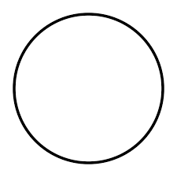

 Circle
A circle is a shape consisting of all points in a plane that are at a given distance from a given point, the centre. The distance between any point of the circle and the centre is called the radius.
Back to root
Kirby and the Forgotten Land